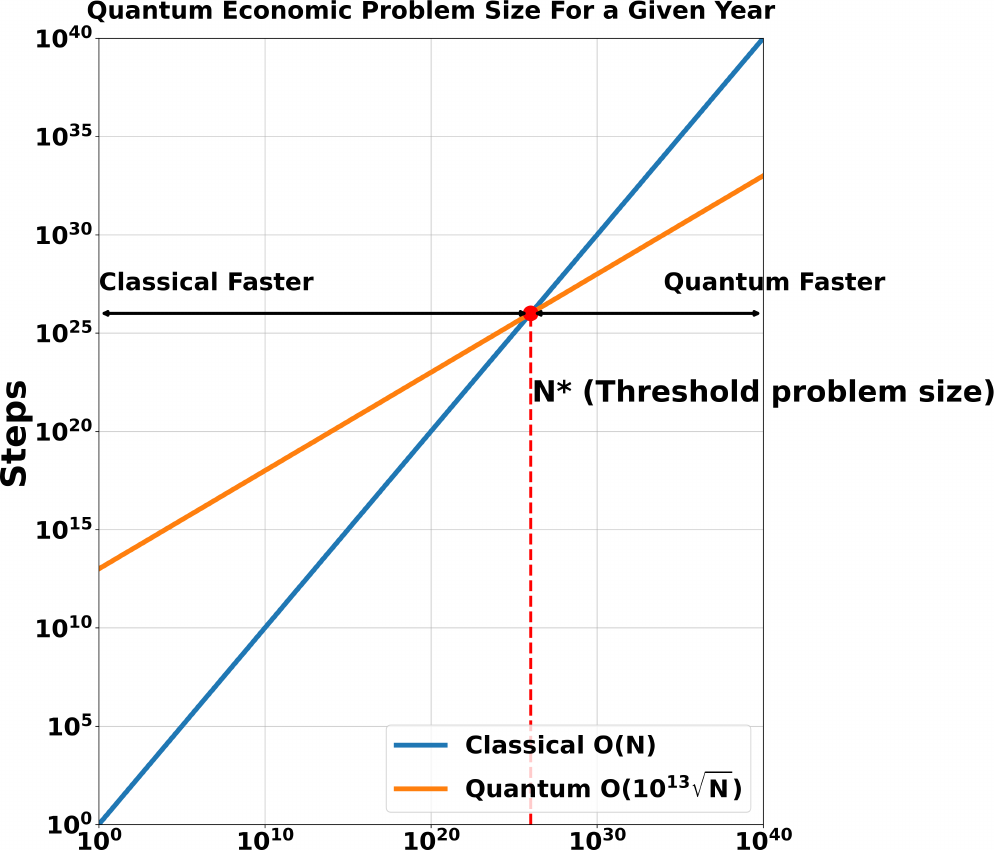
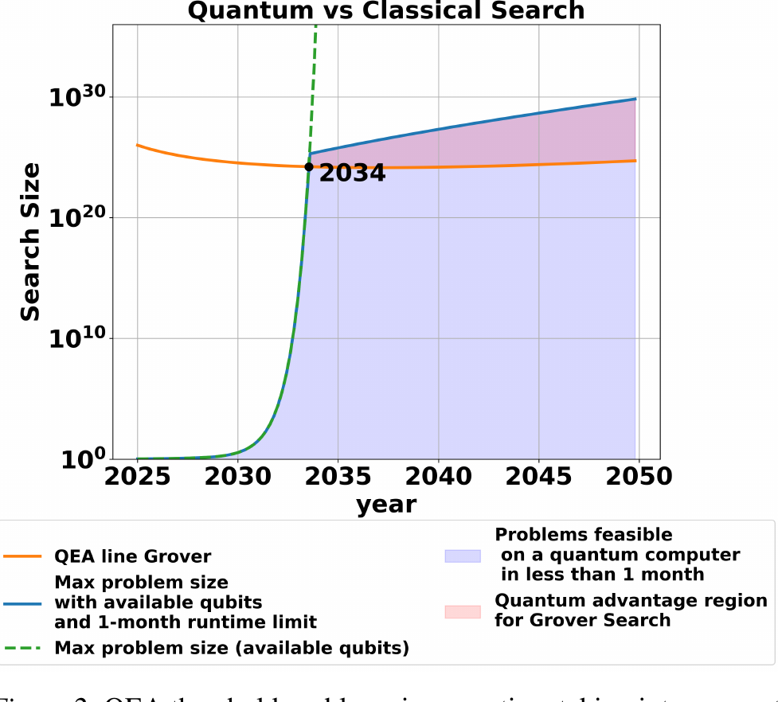
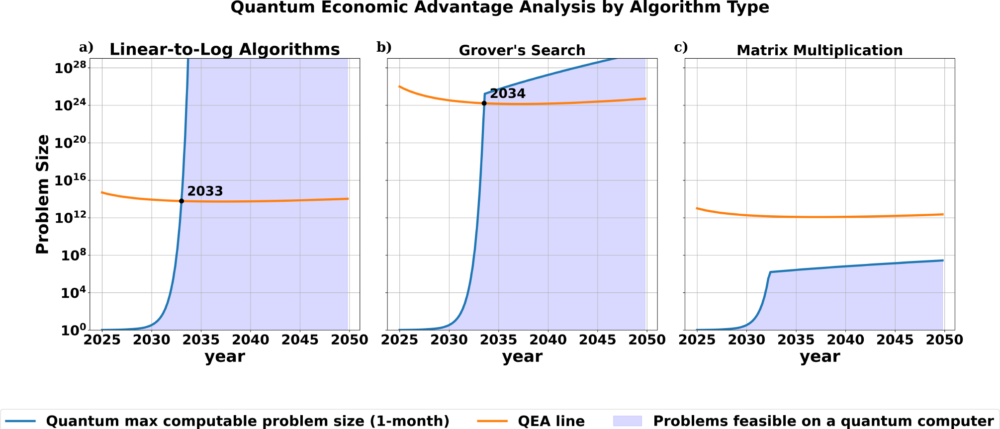

1MIT FutureTech, CSAIL, Cambridge MA, USA | 2TU Wien, Vienna, Austria
Even accounting for rapid hardware progress, quantum computers will need a quantum leap — not just steady improvement — to meaningfully accelerate deep learning over the next 10–20 years.
Deep learning's progress tracks compute — the “bitter lesson.” As classical hardware nears its limits, it is natural to ask whether quantum hardware could drive the next paradigm shift, as GPUs once did.
We present a first-of-its-kind survey mapping quantum algorithms onto every stage of the deep-learning pipeline, paired with quantitative economic-advantage forecasts built on real quantum hardware trends.
The verdict: today's promising speedups are blocked by overhead, missing memory, or apply only to narrow special cases.

We extend the Quantum Economic Advantage framework of Choi et al. (2023). Quantum devices have asymptotic advantages but enormous constants:
We forecast how qubit counts, gate speeds, and error rates evolve, then compute when—if ever—each algorithm crosses its threshold.

We assess the best available quantum option at each stage of the deep-learning pipeline — and its status today.
| DL stage | Best quantum option | Speedup | Status |
|---|---|---|---|
| Data processing | q-means; quantum PCA | Exponential | Blocked by QRAM |
| Hyperparameter & action search | Grover; Dürr–Høyer | Quadratic | Infeasible (N > 1024) |
| General matmul / attention | Swap-test; Gao attention | Polynomial | Lost to overhead; QRAM limits |
| NN training (classical) | Allcock; Liu; Newton; Zlokapa | Mixed | Promising, but slow / restrictive |
| Quantum NNs / VQAs | VQAs; kernel methods | Unclear | No advantage in benchmarks |
We vary every growth rate and constant in the model across 10−3–104. The predicted advantage year is largely insensitive to these changes.
The one real lever is the quantum gate-speed improvement rate (beyond Moore's law), which materially shifts the outlook for matrix multiplication. Grover predictions are robust — these algorithms are time-bound, not qubit-bound.

Quantum's near-term role in deep learning is narrow. The opportunity is real — but realizing it requires a leap, not a step.